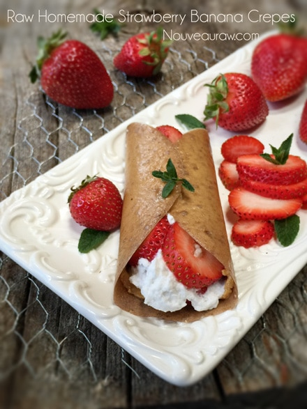

Banana Wraps
Banana Wraps

~ raw, vegan, gluten-free, nut-free ~
I know that this post may seem rather silly due to its simplicity but none the less for a few people out there… I am going to share with you a bit about dehydrating bananas.
Dehydrating fruit is such a wonderful way to have several fruits handy year-round, not just during its peak season of harvest. Granted, you can get can bananas year round without any real issues. Though much to my surprise the bananas in Alaska went through a phase of being neon green! I couldn’t find a ripe banana if my life counted on it.
I processed 40 lbs of ripe bananas. Yep, 40 lbs! One day as I was flying by the produce department in a panic need of finding the restroom, out of the corner of the eye I spotted a discount sign on some boxes of bananas. Sale?!
Oh dear, my pit-stop to the Lu was detoured. I quickly pulled myself up the stack of boxes. $5 a box! $5 bucks for 40 lbs of RIPE bananas! I was dancing in place, really needing to relieve myself but too excited to leave my find and risk someone else stealing them away from me. What was a girl to do? Lu? Bananas? Lu….bananas. Well, you can see who won!
I heaved the box up into my arms, the box pressing heavily on my bladder…I waddled my way to the checkout stand. Made my steal of a deal purchase and made my way to the car. SCORE! I was so excited about those darn bananas that the fact that I really needed to use the restroom eluded me. After a 15-minute drive home, I carried my box in the door, and without even kissing my husband I handed him the box and ran down the hallway. Aaaah, mission accomplished!
Now what to do with 40 lbs of bananas that are extremely ripe! Banana wraps make for a wonderful dessert.
Ingredients:
- 5 ripe bananas
- 1 tsp vanilla (optional)
- 1 tsp cinnamon (optional)
Preparation:
- Place the bananas, vanilla, and cinnamon in the blender or food processor and blend until smooth. Don’t forget to remove the peel. :)
- Ripe banana – this is very very important. When consuming bananas, they should always be ripe. This will help with digestion, and they taste much sweeter. So, when shopping or using bananas, use bananas that have brown spots on them. Not black bruises, just nice brown spots.
- Line the dehydrator tray with a non-stick sheet and pour the batter onto it. Spread into the size of the wrap that you want.
- Dehydrate at 115 degrees (F) until the desired consistency is reached, roughly 6 hours, depending on thickness.
- There shouldn’t be any wet spots on your fruit leather. It should peel right off the teflex sheet.
- You don’t want to over-dry it; you want it to stay pliable.
- These can be eaten just like a fruit leather, or you can use them as a dessert wrap. Wrap out some fruit and raw cream….mmm, I must be hungry right now as I type this because that sure sounds great!
- For the recipe in the photo, click (here).
- Store in plastic wrap, keeping them separated from one another.
- You can store them flat or roll them in the plastic wrap, making sure that the rolled wrap doesn’t come in contact with itself.
- For extra protection, after wrapped in plastic, slide into a ziplock bag or airtight container.
- They can keep for 1-2 months… maybe longer.
© AmieSue.com